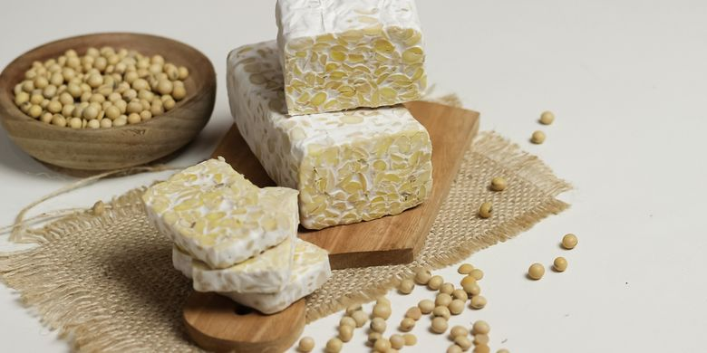
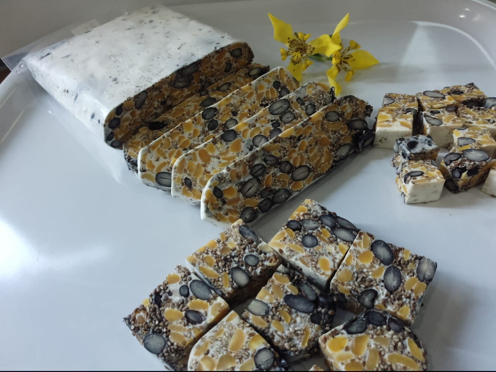
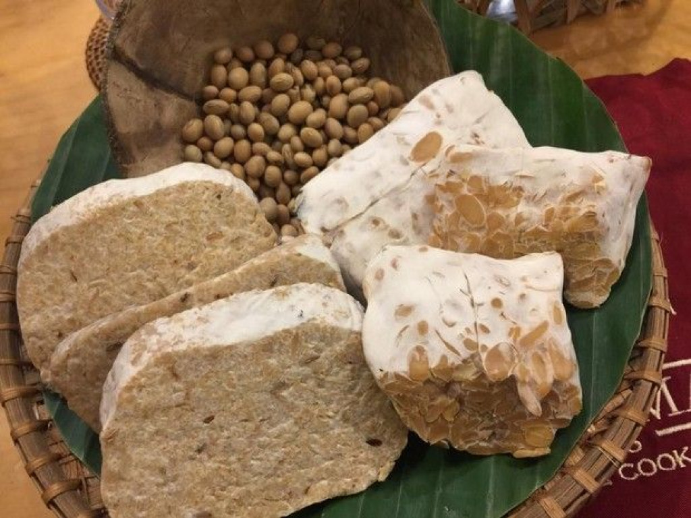

Tempe Kacang Tanah
Tempe kacang tanah adalah alternatif tempe berbahan lokal yang lebih terjangkau dan mulai dikenal sebagai makanan sehat dan bergizi.
Rp 19.500
order
Tempe Kacang Merah
Tempe kacang merah adalah inovasi tempe berbahan kacang merah sebagai alternatif kaya protein dan serat dari kedelai.
Rp. 12.100
order
Tempe Kacang Kedelai
Tempe kedelai adalah makanan fermentasi asal Indonesia sejak abad ke-17, kaya protein dan ramah lingkungan.
Rp 16.200
orderTempe Kacang Ijo
Tempe kacang ijo adalah tempe alternatif berbahan kacang hijau yang kaya protein dan serat.
Rp 20.000
order
Tempe Kacang Hitam
Tempe kacang hitam adalah tempe alternatif bergizi berbahan kacang hitam untuk mendukung pangan lokal.
Rp 16.200
order
Tempe Kacang Koro
Tempe kacang koro adalah variasi tempe berbahan kacang koro, dikembangkan sebagai alternatif kedelai yang murah, bergizi, dan mendukung diversifikasi pangan lokal.